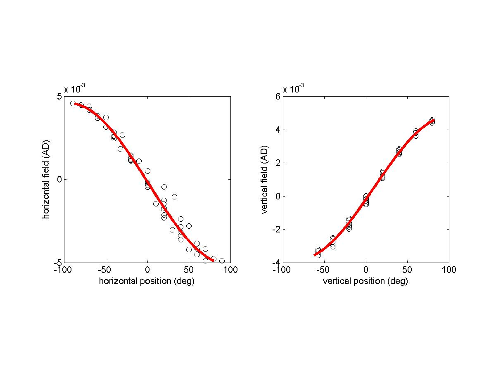
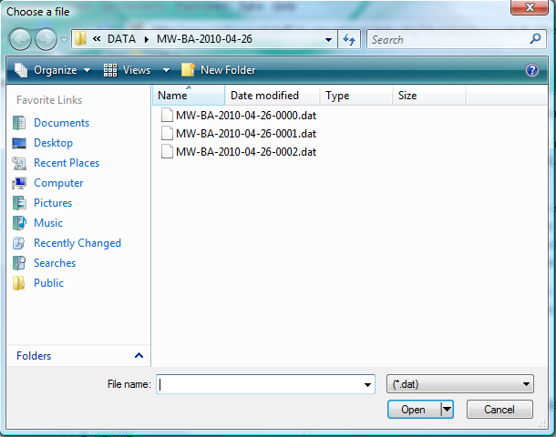
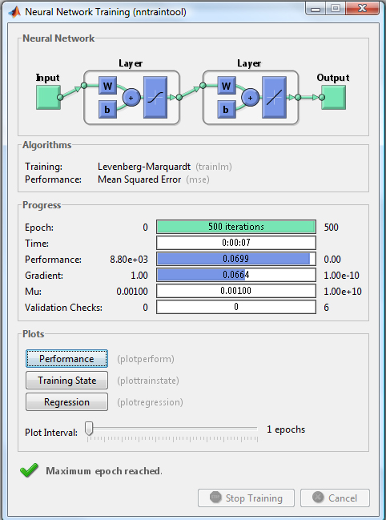
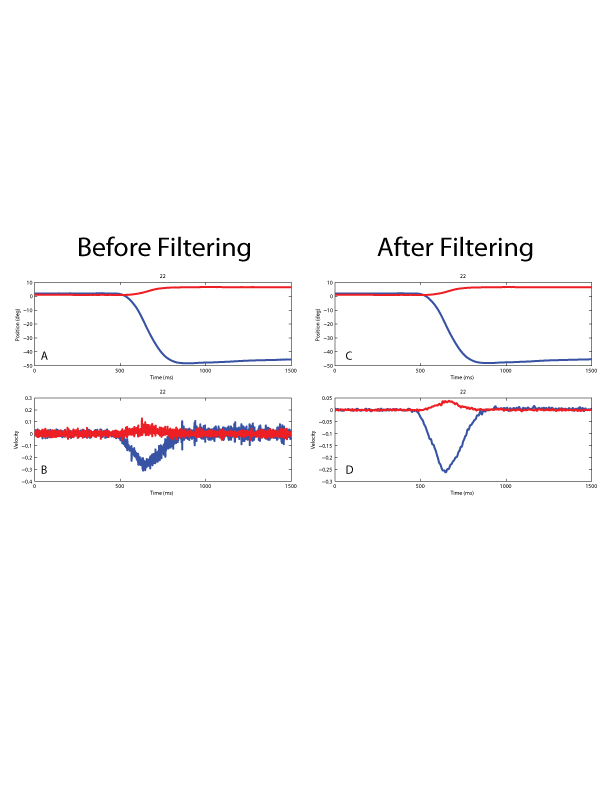

PANDA tutorial, for students and coworkers: calibration of eye- and head-position signals measured by a search coil with pa_calibrate.m.
Something we do a lot at our lab is analyzing saccades, eye movements and/or head movements. Signals measured by any eye-movement tracking system (cameras, search coil, DMI) do not directly correspond to actual eye position.Careful and absolute positioning of the eye tracker and the subject's eyes usually allows for an exact conversion of the measured signals to eye position by formulae relating the signals to actual eye position. However, this exact positioning might be difficult to achieve (e.g. for the double-magnetic induction technique), positioning might change during the course of an experiment, the eye-tracking system might have small flaws and inconsistenties (e.g. inhomogeneities in a magnetic field for search coil measurements), and the formulae might be too complex. An easy alternative, then, is to have the subject fixate predefined locations, and calibrate the measured signals. In this tutorial, you will train a neural network with the signals obtained from a calibration experiment, and use that network to calibrate signals measured during a sound-localization experiment.
The PandA toolbox is required for most of the data-analysis. Data for this tutorial can be found here. This zip-file contains data from one naive subject localizing sounds by pointing his head to a perceived sound source. You will have to unzip this file to a single directory, and go to that directory in MatLab, e.g.:
cd('MW-BA-2010-04-26');
dir
The dir-function will show that there are several files recorded during the experiments:>> dir >> MW-BA-2010-04-26-0000.dat MW-BA-2010-04-26-0001.dat MW-BA-2010-04-26-0002.dat MW-BA-2010-04-26-0000.log MW-BA-2010-04-26-0001.log MW-BA-2010-04-26-0002.log MW-BA-2010-04-26-0000.csv MW-BA-2010-04-26-0001.csv MW-BA-2010-04-26-0002.csv
The naming-convention at our lab is: XX-SS-YYYY-MM-DD-NNNN, with
Thus, in this case we know that the experimenter's initials were MW, subject's initials were BA, the date of the experiment was the 26th of april, 2010, and we had 3 experiments (note that this naming convention is not essential for the analysis). Usually, an experimental session starts with a calibration experiment, and this experiment is labeled with the experiment-number of 0000. For the current data, this is also the case. A calibration experiment is needed to map the raw voltage traces to calibrated positions (subjects point a laser pointer fixed to the head/eye towards a LED with a known position: the voltages induced by a magnetic field in a coil are recorded by the computer).
A single experiment will produce three files: a dat-, csv-, and log-file. The dat-file contains the position traces (still in voltages), the csv- and log-files contain stimulus information (these are redundant, both contain the same information, yet in a different format).
You will use several custom-made MatLab functions to analyse the data, in the following order:
pa_calibrate %% Determine voltage-head position relationship, and calibrate the actual sound localization experiment(s)
pa_sacdet %% Detect eye/head movements in traces
pa_sac2mat %% Extract movement parameters, such as reaction time, movement amplitude, movement velocity
These functions may be cryptic at first, but essential. Below they will be explained in detail. Even when you don't fully understand these steps, just follow them and you will have all data parameters you need: reaction times, localization errors, movement velocity, etc, all stored in a single MAT-file. An example of what you can do with these parameters / this MAT-file can be found in this saccade tutorial.
This chapter describes the steps needed to transform the AD-numbers in the raw data files (*.dat) into degrees-calibrated position signals. What does this mean? Well, you have recorded a voltage signal from a measurement device (such as the search coil, ring, or camera), and we have to determine which voltage signal belongs to which eye/head position. To that end, the subject looked at well-defined LED-locations, and we recorded the voltage signals. Theoretically, these voltage signals depend sinusoidally on the actual locations when these are expressed in double-polar coordinates:
However, practically, due to possible cross-talk of channels (i.e. the horizontal recording channel has an influence on the vertical recording channel, and vice versa), or iconsistencies in the subject's eyes (e.g. amblyopia) this relationship may be perturbed. A neural network can account for these non-linearities. Note: for those who want to reconstruct this figure from the data, here is the code (skip this if you are not interested or not an experienced Matlab-user):
%% Initialization
% Clearing
clear all
close all
clc
%% Read stimulus
[expinfo,chaninfo,mLog] = pa_readcsv('MW-BA-2010-04-26-0000');
Stim = pa_log2stim(mLog);
sel = ismember(Stim(:,3),0:1);
TarAz = Stim(sel,4);
TarEl = Stim(sel,5);
%% Read data
DAT = pa_loaddat('MW-BA-2010-04-26-0000',8, 100, 56);
H = mean(squeeze(DAT(:,:,1)));
V = mean(squeeze(DAT(:,:,2)));
%% Graphics
subplot(121)
h = plot(TarAz,H,'ko');
hold on
set(h,'MarkerFaceColor','w');
axis square
xlabel('horizontal position (deg)');
ylabel('horizontal field (AD)');
Inipar(1) = -90;
Inipar(2) = 1/((max(H)-min(H))/2);
Inipar(3) = mean(H);
Inipar(4) = 0;
Hpar = pa_fitasin(H,TarAz,Inipar);
x = linspace(min(H),max(H),100);
CalH = pa_asinfun(x,Hpar);
CalH = CalH(:);
h = plot(CalH,x,'r-');
set(h,'LineWidth',3);
subplot(122)
h = plot(TarEl,V,'ko');
hold on
set(h,'MarkerFaceColor','w');
axis square
xlabel('vertical position (deg)');
ylabel('vertical field (AD)');
Inipar(1) = -90;
Inipar(2) = 1/((max(V)-min(V))/2);
Inipar(3) = mean(V);
Inipar(4) = 0;
Vpar = pa_fitasin(V,TarEl,Inipar);
x = linspace(min(V),max(V),100);
CalV = pa_asinfun(x,Vpar);
CalV = CalV(:);
h = plot(CalV,x,'r-');
set(h,'LineWidth',3);
To calibrate Eye Position signals, the relation between the actual orientation of the coil and the eye and the associated AD numbers from the TDT module has to be determined. Therefore, the subject has to fixate LEDs with known positions in the set-up. An example trial in a calibration experiment in the Biophysics- setup at the Donders-institute looks like this (for details, look at the set-up manual):
% MOD X Y ID INT On On Off Off Event % edg bit Event Time Event Time ==> Trg0 1 5 0 0 1 Acq 1 0 100 LED 90 12 255 0 0 1 100
It is important to start data acquisition after the subject has properly fixated the LED (which he can indicate by a button press). The subject then has to keep fixation for as long as data is acquired (usually about 100 ms will suffice).
To learn the relation between eye position and AD data, a feedforward neural network, implemented in MATLAB’s neural network toolbox, is used (5-hidden units-layer back-propagation, with Levenberg-Macquardt and Bayesian regulization training method). The exact details of how this works is not important for now. What is, is that you know that through this method, we will be able to transform the AD/voltage values in the dat-files to actual positions in degrees. You will need to call the MATLAB-GUI
pa_calibrate
which will open a dialog from which you can choose the desired file:
This GUI wil automatically train the network (Figure 3 will pop-up in MatLab) on the AD-traces in the DAT-file and the target position in the CSV-file.
After training you wil see the GUI appear as in Figure 4. In figure 4A, you can see how a sinusoidal fit performs: the fitted positions (crosses) are displayed together with the corresponding target positions (circles). Usually, you can see a (sytematic) discrepancy between the sinusoidal fit and the actual target positions. Sometimes, you might observe an (non-systematic) outlier which is probably due to a mistake from the subject. By simply clicking you can remove any undesirable outlier. In the example, the subject seems to have fixated well. There are some deviations between the target and the fixation position, but they are systematic (due to non-linearities in the magnetic fields), and they can be easily taken care of by the network. In Figure 4B, you can specify the azimuth and elevation components, so you can observe the time trace of one fixation.
If you have removed any outliers, you will need to re-train the network. This is done in Figure 4F by pressing the “Train Anew”-button. The neural networks are trained by applying the Levenberg-Macquardt gradient descent method with Bayesian regulization (see Neural Network Toolbox). Two networks are trained separately: one network for the horizontal component of eye position and one for the vertical position component. The actual target positions serve as the teacher signal for the network. The end result of the learning procedure, the weights of the network, are stored in a so-called NET-file by pressing the “Save network parameters”-button.
The performance of the trained network is shown in the three figure axes. If you do not like the performance, you can repeatedly try to train the network again (“Train Anew”-button) and save the desired network (“Save network parameters”-button). The average errors for horizontal and vertical fixations (Figure 4C) should be on average zero, and there should be no systematic deviations. The typical standard deviation should be less than 1 deg. Furthermore, the iso-azimuth and iso-elevation lines of the X and Y magnetic fields (Figure 4D) should not contain too many strange warps (which indicate overfitting), and the target and calibrated fixation positions of the network (Figure 4E) should not deviate systematically. By pressing the button Calibrate all raw DAT-files in the current directory will be calibrated (e.g. the AD-values of the three channels will be converted in 2-dimensional horizontal and vertical positions). This will yield HV-files (HV stands for horizontal and vertical). Through input variables, you can tell the
pa_calibratefunction which NET-file to use, and which DAT-files to calibrate (see the help of pa_calibrate).
Since the data will without a doubt contain noise, it is also low-pass filtered. The effect of filtering is exemplified in figure 5. For additional info, see the help-function on
pa_hvfilt
Now, you can continue with saccade detection.
{kind=link}
{kind=link}
{kind=link}
{kind=link}
{kind=link}